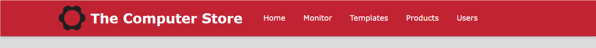
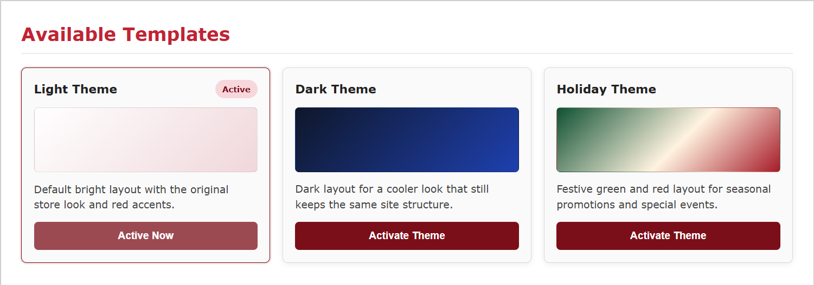

How to Switch Site Themes
- While on the Admin page, click on Templates in the top navigation bar.

- Scroll down, and you'll find options for three different site templates. The current/active theme will be highlighted.

- Now, simply click on your desird theme, and it will be applied to entire site.
This is all placeholder. Info will be updated once all required pages are finalized.